Revisa la Bibliografía recomendada en la sección Fuentes de Información del curso.
Estado, Equilibrio, Proceso
Estado
Considere un sistema que no está experimentando ningún cambio. Las propiedades se pueden medir o calcular en todo el sistema. Esto nos da un conjunto de propiedades que describen completamente la condición o estado del sistema. En un estado dado se conocen todas las propiedades; cambiar una propiedad cambia el estado.
Equilibrio
Se dice que un sistema está en equilibrio termodinámico si mantiene el equilibrio térmico (temperatura uniforme), mecánico (presión uniforme), de fase (la masa de dos fases, por ejemplo, hielo y agua líquida, en equilibrio) y químico.
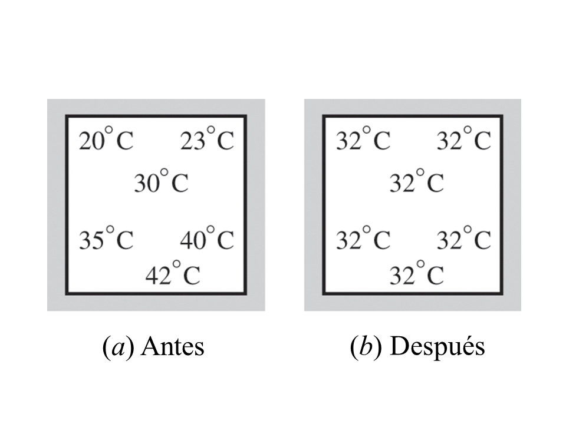
Proceso
Cualquier cambio de un estado a otro se llama proceso. Durante un proceso de cuasi-equilibrio o cuasi-estático el sistema permanece prácticamente en equilibrio en todo momento. Estudiamos los procesos de cuasiequilibrio porque son fáciles de analizar (se aplican ecuaciones de estado) y los dispositivos que producen trabajo entregan la mayor cantidad de trabajo cuando operan en el proceso de cuasiequilibrio.
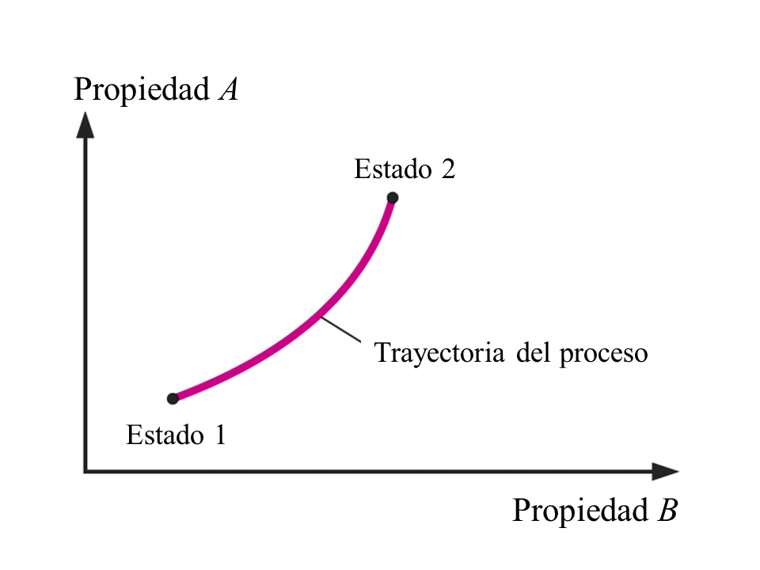
En algunos procesos, una propiedad termodinámica se mantiene constante. Algunos de estos procesos son:
| Propiedad constante | Proceso |
| Presión | Isobárico |
| Temperatura | Isotérmico |
| Volumen | Isocórico |
| Entalpía | Isoentálpico |
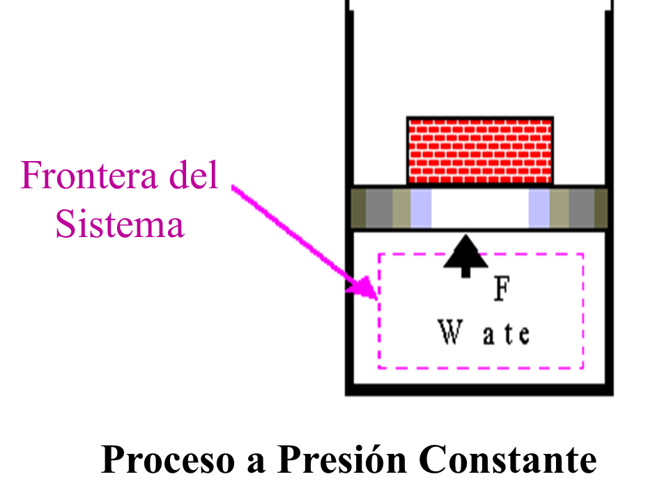
Podemos entender el concepto de un proceso a presión constante considerando la figura anterior. La fuerza ejercida por el agua sobre la cara del pistón tiene que ser igual a la fuerza debida al peso combinado del pistón y los ladrillos. Si el peso combinado del pistón y los ladrillos es constante, entonces F es constante y la presión es constante incluso cuando se calienta el agua.
A menudo mostramos el proceso en un diagrama PV como se muestra a continuación.
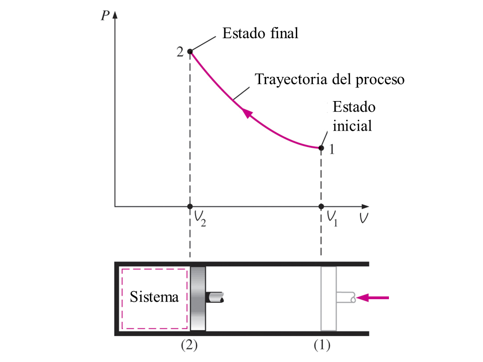
Postulado de estado
Como se señaló anteriormente, el estado de un sistema se describe por sus propiedades. Pero por experiencia no deben conocerse todas las propiedades antes de especificar el estado. Una vez que se conoce un número suficiente de propiedades, se especifica el estado y se conocen todas las demás propiedades. El número de propiedades requeridas para fijar el estado de un sistema homogéneo simple está dado por el postulado de estado:
El estado termodinámico de un sistema compresible simple está completamente especificado por dos propiedades intensivas independientes.
Ciclo
Un proceso (o una serie de procesos conectados) con estados finales idénticos se denomina ciclo. A continuación se muestra un ciclo compuesto por dos procesos, $A$ y $B$. A lo largo del proceso $A$, la presión y el volumen cambian del estado $1$ al estado $2$. Luego, para completar el ciclo, la presión y el volumen cambian del estado $2$ al estado inicial $1$ a lo largo del proceso $B$. Tenga en cuenta que todas las demás propiedades termodinámicas también deben cambiar para que la presión sea función del volumen como se describe en estos dos procesos.
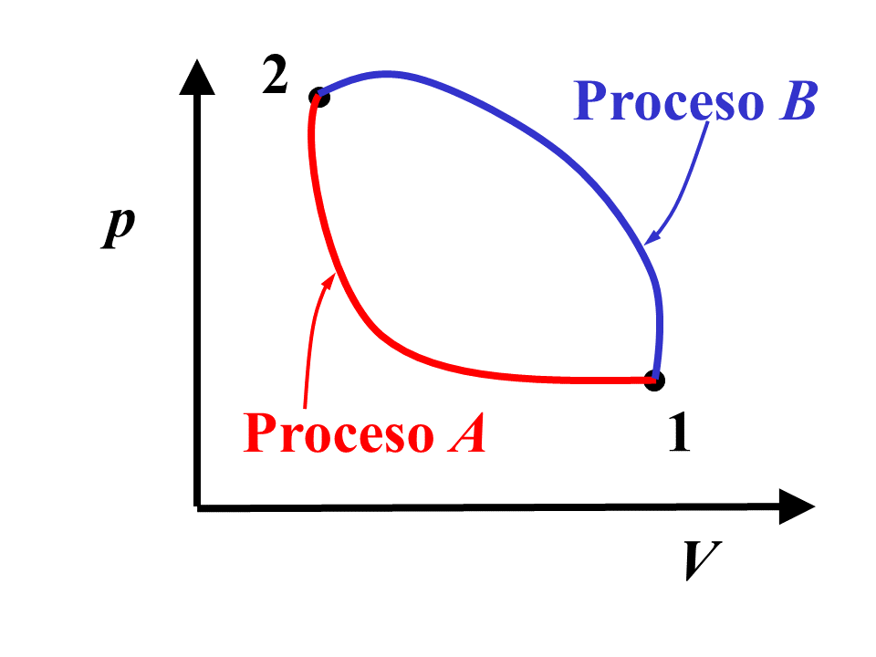
Presión
La fuerza por unidad de área se llama presión, y su unidad es el Pascal $\left(\text{Pa}=\displaystyle{\frac{\text{N}}{\text{m}^2}}\right)$, en el sistema internacional, SI, y libra por pulgada cuadrada absoluto $\left(\text{psia}=\displaystyle{\frac{\text{lbf}}{\text{in}^2}}\right)$, en el sistema inglés, USC.
$$ p = \frac{\text{Fuerza}}{\text{Área}} = \frac{F}{A} $$ $$ 1 \text{ kPa} = 10^3 \frac{\text{N}}{\text{m}^2} $$ $$ 1 \text{ MPa} = 10^6 \frac{\text{N}}{\text{m}^2} = 10^3 \text{ kPa} $$
La presión utilizada en todos los cálculos de estado es la presión absoluta medida en relación con la presión cero absoluta. Sin embargo, las presiones a menudo se miden en relación con la presión atmosférica y se denominan presiones manométricas o de vacío. En el sistema inglés, la presión absoluta y la presión manométrica se distinguen por sus unidades, psia (libras fuerza por pulgada cuadrada absoluta) y psig (libras fuerza por pulgada cuadrada manométrica), respectivamente; sin embargo, el sistema SI no hace distinción entre presiones absolutas y manométricas.
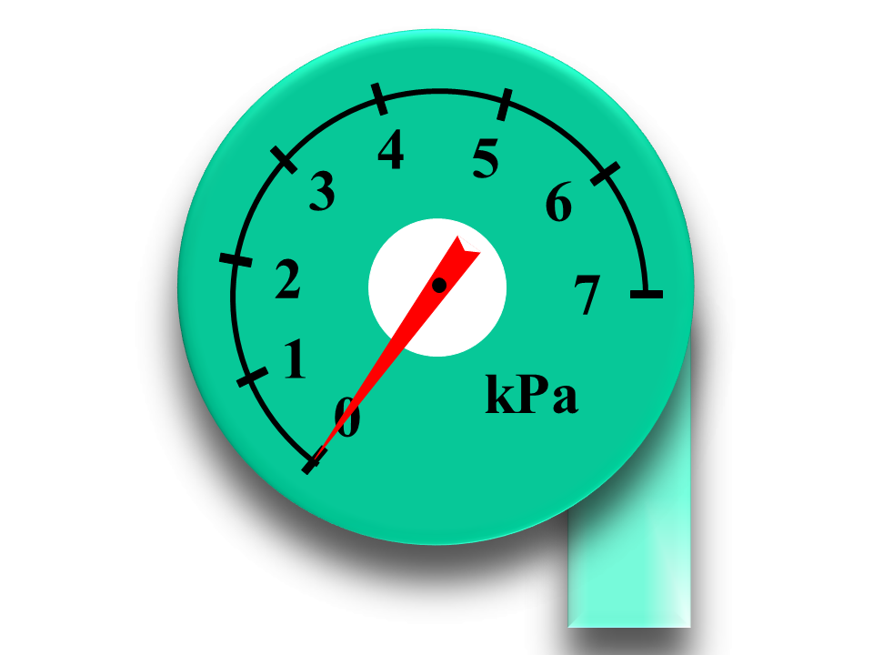
Estas presiones están relacionadas por
$$ p_{\text{man}} = p_{\text{abs}} - p_{\text{atm}} $$ $$ p_{\text{vac}} = p_{\text{atm}} \pm p_{\text{abs}} $$O bien, estos dos últimos resultados pueden escribirse como
$$ p_{\text{abs}} = p_{\text{atm}} \pm p_{\text{man}} $$en donde $ + p_{\text{man}} $ se usa cuando $ p_{\text{abs}} \gt p_{\text{atm}} $, y $ - p_{\text{man}} $ se usa cuando $ p_{\text{abs}} \lt p_{\text{atm}} $ y se mide con un manómetro de vacío. La relación entre las presiones atmosférica, manométrica y de vacío se muestra a continuación.
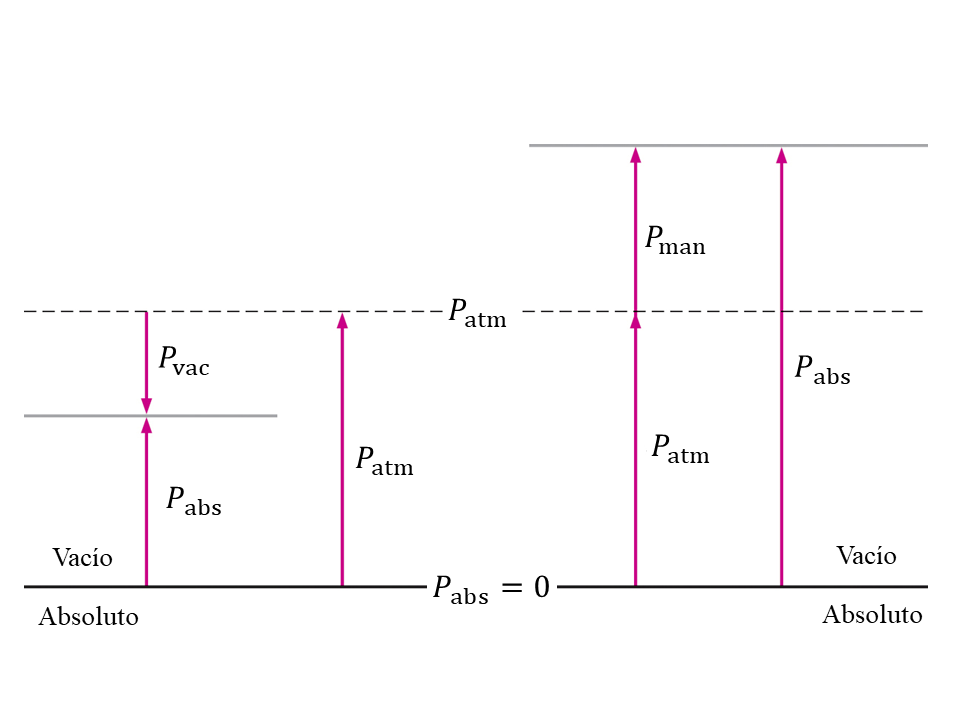
Las diferencias de presión pequeñas a moderadas se miden con un manómetro y una columna de fluido diferencial de altura h corresponde a una diferencia de presión entre el sistema y los alrededores del manómetro.
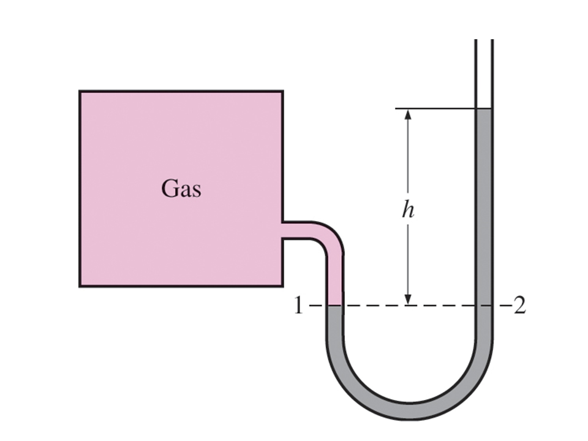
Esta diferencia de presión se determina a partir de la altura desplazada del fluido del manómetro como
$$ \Delta p = \rho g h\, \, [\text{kPa}] $$
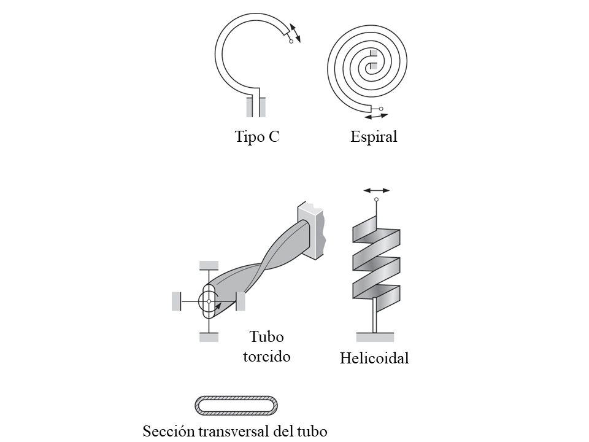
Temperatura
Aunque estamos familiarizados con la temperatura como una medida de calor o frialdad, no es fácil dar una definición exacta de la misma. Sin embargo, la temperatura se considera como una propiedad termodinámica que es la medida del contenido de energía de una masa. Cuando la energía térmica se transfiere a un cuerpo, el contenido de energía del cuerpo aumenta y también lo hace su temperatura. De hecho, es la diferencia de temperatura lo que hace que la energía, llamada transferencia de calor, fluya de un cuerpo caliente a un cuerpo frío. Dos cuerpos están en equilibrio térmico cuando han alcanzado la misma temperatura. Si dos cuerpos están en equilibrio térmico con un tercer cuerpo, también están en equilibrio térmico entre sí, este simple hecho se conoce como la Ley cero de la termodinámica.
Las escalas de temperatura que se utilizan en los sistemas SI y USC en la actualidad son la escala Celsius y la escala Fahrenheit, respectivamente. Estas dos escalas se basan en un número específico de grados entre el punto de congelación del agua ($0^\circ\text{C}$ o $32^\circ\text{F}$) y el punto de ebullición del agua ($100^\circ\text{C}$ o $212^\circ\text{F}$) y están relacionados por
$$ T[^\circ\text{C}] = \frac{5}{9} ( T ^\circ\text{F} - 32) $$Como la presión, la temperatura utilizada en los cálculos termodinámicos debe estar en unidades absolutas. La escala absoluta en el sistema SI es la escala Kelvin que está relacionada con la escala Celsius por
$$ T[\text{K}] = T[^\circ\text{C}] + 273.15 $$En el sistema inglés, la escala de temperatura absoluta es la escala de Rankine, que está relacionada con la escala Fahrenheit por
$$ T[\text{R}] = T[^\circ\text{F}] + 459.67 $$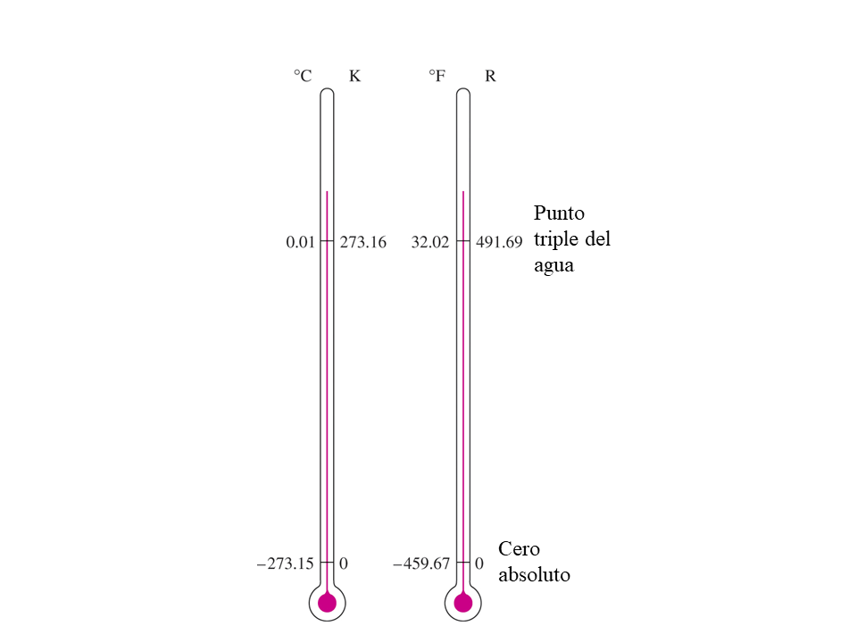
Las magnitudes de cada división de $1 \text{ K}$ y $1^\circ\text{C}$ son idénticas, al igual que las magnitudes de cada división de $1 \text{ R}$ y $1^\circ\text{F}$; es decir,
$$ \Delta T [\text{K}] = (T_2[^\circ\text{C}] + 273.15) - (T_1[^\circ\text{C}] + 273.15) $$ $$ \Delta T [\text{K}] = T_2[^\circ\text{C}] - T_1[^\circ\text{C}] $$ $$ \Delta T [\text{K}] = \Delta T [^\circ\text{C}] $$y de la misma forma para el USC $$ \Delta T [\text{R}] = \Delta T [^\circ\text{F}] $$
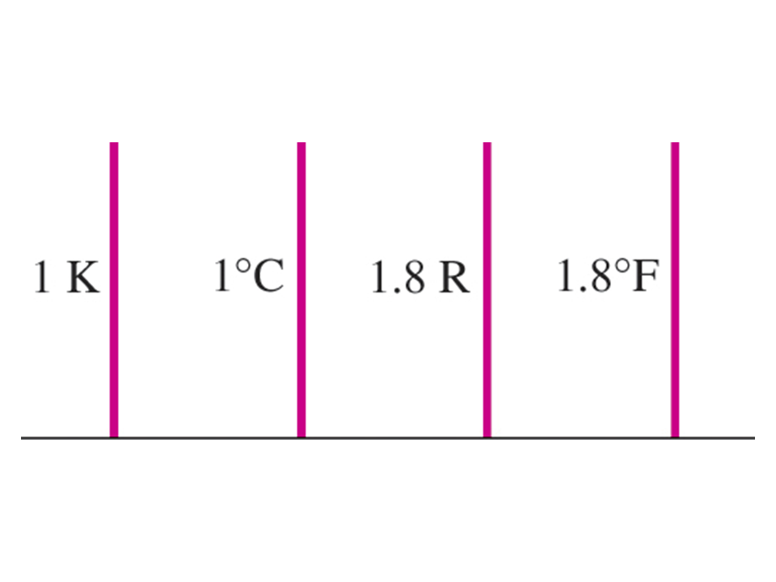